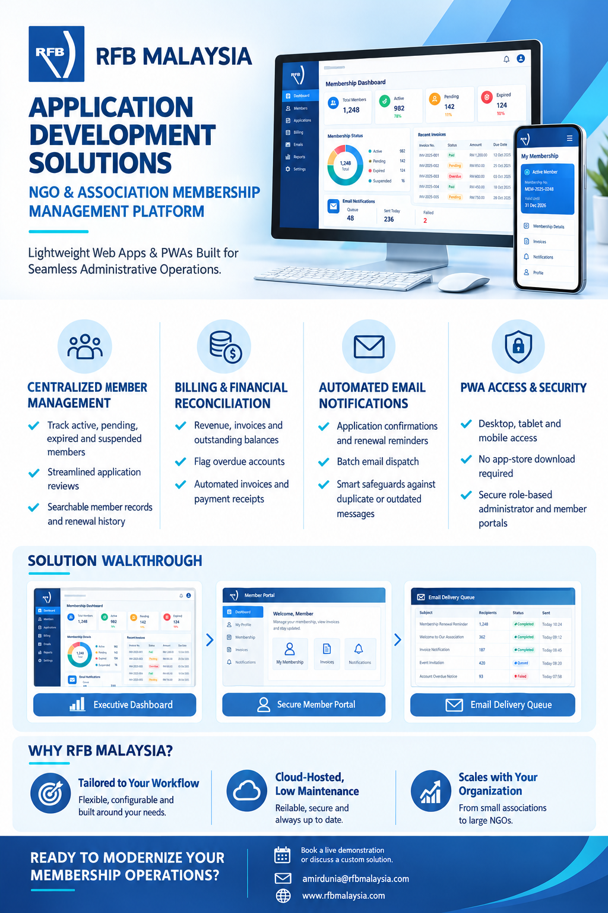

<section id="services" class="py-20 bg-white">
    <div class="max-w-7xl mx-auto px-4 sm:px-6 lg:px-8">
        <div class="text-center max-w-2xl mx-auto mb-16">
            <h2 class="text-xs font-bold text-blue-600 uppercase tracking-widest mb-3">Our Solutions</h2>
            <h3 class="text-3xl font-extrabold text-slate-900 tracking-tight">Infrastructure decisions backed by better visibility</h3>
            <p class="text-slate-600 mt-4 leading-relaxed">From the field asset to the executive dashboard, RFB Malaysia connects proven European technology with local technical engagement.</p>
        </div>

        <div class="grid grid-cols-1 md:grid-cols-3 gap-8">
            <div class="bg-slate-50 border border-slate-200 p-8 rounded-xl hover:shadow-xl transition duration-300 group">
                <div class="w-14 h-14 bg-blue-100 text-blue-600 rounded-lg flex items-center justify-center text-2xl font-bold mb-6 group-hover:bg-blue-600 group-hover:text-white transition">
                    <i class="fa-solid fa-code"></i>
                </div>
                <h4 class="text-xl font-bold text-slate-900 mb-3">FNT Software</h4>
                <p class="text-slate-600 text-sm leading-relaxed mb-4">
                    OSS/DCIM and fiber network documentation software for telecom, IT and data center infrastructure. FNT Command models physical, logical and virtual layers as a digital twin.
                </p>
                <ul class="text-sm text-slate-700 space-y-2"><li><i class="fa-solid fa-check text-blue-600 mr-2"></i>Plan vs. As-Built tracking</li><li><i class="fa-solid fa-check text-blue-600 mr-2"></i>Fiber and cable core-level modeling</li><li><i class="fa-solid fa-check text-blue-600 mr-2"></i>Asset inventory and dashboards</li></ul>
            </div>

            <div class="bg-slate-50 border border-slate-200 p-8 rounded-xl hover:shadow-xl transition duration-300 group">
                <div class="w-14 h-14 bg-blue-100 text-blue-600 rounded-lg flex items-center justify-center text-2xl font-bold mb-6 group-hover:bg-blue-600 group-hover:text-white transition">
                    <i class="fa-solid fa-network-wired"></i>
                </div>
                <h4 class="text-xl font-bold text-slate-900 mb-3">AXING Broadband & Cable</h4>
                <p class="text-slate-600 text-sm leading-relaxed mb-4">
                    Swiss-engineered distribution hardware for fiber, coaxial and multimedia networks, from optical nodes and amplifiers to headends and multiswitches.
                </p>
                <ul class="text-sm text-slate-700 space-y-2"><li><i class="fa-solid fa-check text-blue-600 mr-2"></i>Network operator distribution</li><li><i class="fa-solid fa-check text-blue-600 mr-2"></i>Reception and headend technology</li><li><i class="fa-solid fa-check text-blue-600 mr-2"></i>Hospitality and MDU systems</li></ul>
            </div>

            <div class="bg-slate-50 border border-slate-200 p-8 rounded-xl hover:shadow-xl transition duration-300 group">
                <div class="w-14 h-14 bg-blue-100 text-blue-600 rounded-lg flex items-center justify-center text-2xl font-bold mb-6 group-hover:bg-blue-600 group-hover:text-white transition">
                    <i class="fa-solid fa-server"></i>
                </div>
                <h4 class="text-xl font-bold text-slate-900 mb-3">Additional Solutions</h4>
                <p class="text-slate-600 text-sm leading-relaxed mb-4">
                    Focused technology solutions for hospitality and infrastructure protection projects where reliability and standards matter.
                </p>
                <ul class="text-sm text-slate-700 space-y-2"><li><i class="fa-solid fa-check text-blue-600 mr-2"></i>Hotel IPTV aggregation solutions</li><li><i class="fa-solid fa-check text-blue-600 mr-2"></i>IPTV and SMATV for hotels, hospitals and MDUs</li><li><i class="fa-solid fa-check text-blue-600 mr-2"></i>Lightning protection deployment to IEC 62305</li></ul>
            </div>
        </div>

        <div class="mt-16 grid grid-cols-1 lg:grid-cols-3 gap-6">
            <div class="lg:col-span-2 bg-slate-900 text-white rounded-xl p-8">
                <p class="text-xs font-bold text-amber-300 uppercase tracking-widest mb-3">FNT Command | Telecom infrastructure management</p>
                <h4 class="text-2xl font-bold mb-4">Stop losing track of what is actually deployed in the field.</h4>
                <p class="text-slate-300 leading-relaxed mb-6">Document fiber routes, poles, ODCs, FDFs, active equipment, power systems and the logical or virtual services that depend on them. FNT Software is used by 500+ enterprises worldwide, including nearly half of Germany's DAX-40 companies.</p>
                <a href="#contact" class="inline-flex items-center bg-amber-400 text-slate-950 font-semibold px-5 py-3 rounded-lg hover:bg-amber-300 transition">Request an FNT consultation <i class="fa-solid fa-arrow-right ml-3"></i></a>
            </div>
            <div class="border border-slate-200 rounded-xl p-4 shadow-sm">
                
                <p class="text-xs font-bold text-blue-600 uppercase tracking-widest mb-2">Product spotlight</p>
                <h4 class="text-xl font-bold text-slate-900 mb-2">Technology built for real infrastructure operations.</h4>
                <p class="text-slate-600 text-sm leading-relaxed">From planning and documentation to field execution and network visibility, RFB Malaysia helps teams bring structured, reliable systems to complex telecom and enterprise environments.</p>
            </div>
        </div>
    </div>
</section>